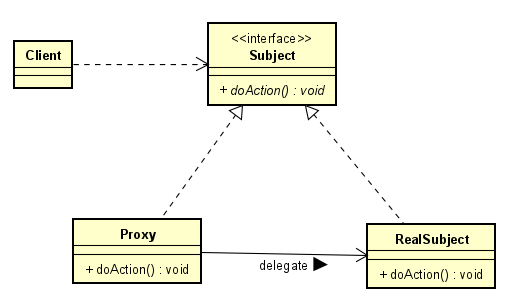
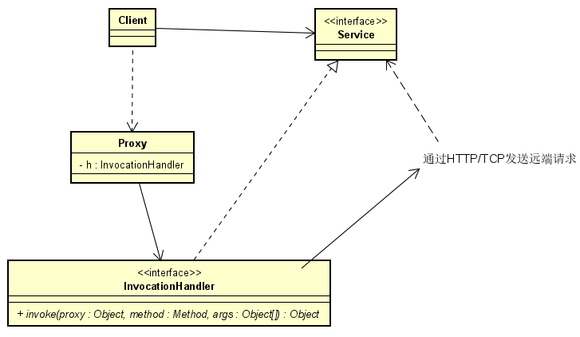

动态代理模式是借助proxy对象执行被代理接口方法的设计模式。 动态代理模式的“动态”体现在代理对象代理的接口所来自的实例方法是可以动态指配的。动态代理模式可以应用于：
- 网络服务接口的调用
- 对一些方法做统一的处理以减少重复代码
动态代理模式的特征是代理类（ProxyClass）和被代理类（RealSubject）实现同一个接口（doAction），使用者（Client）不直接访问被代理类的接口，而是借助代理类实现对接口的访问。

在Java中，实现动态代理模式的相关工具有JDK自带的动态代理模块、CgLib和JavaAssist等。动态代理的典型应用场景有RPC和Spring AOP。接下来分别结合实例代码理解动态代理模式的使用：
一、RPC中的动态代理模式

使用者（Client）对Service接口的调用通过Proxy转化为了对invoke函数的调用，在invoke函数中会调用http/tcp客户端发送调用请求。

以JDChain为例，queryService是通过动态代理模式生成的服务接口 HttpBlockchainBrowserService 的实例。客户端调用getLedgerHashs()方法实际上调用的是 ServiceInvocationHandler 中的 invoke 方法。
二、Spring AOP中的动态代理模式
与发送http/tcp请求不同，aop在invoke函数中运行了method.invoke进行原方法的调用。在method.invoke之前执行的就是前置切面，在method.invoke之后执行的就是后置切面。
使用方法
在SpringBoot项目中添加依赖：1
2
3
4<dependency>
<groupId>org.springframework.boot</groupId>
<artifactId>spring-boot-starter-aop</artifactId>
</dependency>
注入切面类：1
2
3
4
5
6
7
8
9
10
11
12
13
14
public class LogAspect {
/**
* 定义拦截规则：拦截org.springframework.cloud.netflix.eureka.server.InstanceRegistry.register方法
*/
("execution(* org.springframework.cloud.netflix.eureka.server.InstanceRegistry.register(..))")
public void controllerRequestPointcut() {}
("controllerRequestPointcut()")
public Object Interceptor(ProceedingJoinPoint pjp) {
// aspect code here
}
}
三、JuLiuSc合约平台中的使用
获取jar包执行方法并展示
1 | URLClassLoader contractCLassLoader = contractService.loadContractJar(contractJarName); |
注意 clazz.getConstructor 函数的参数由 List 转 [] 类型，不可以直接使用强制类型转换 (Class[]) argClasses.toArray()，不然会报错如下：1
java.lang.ClassCastException: [Ljava.lang.Object; cannot be cast to [Ljava.lang.Class;